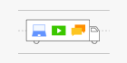

OFDMA:
If this function is enabled, the WiFi signal becomes more stable and stronger for mobile devices.

OFDMA
A Smarter WiFi Coverage Technology
开启OFDMA功能后，多个终端可同时传输，提升了每个终端的传输速率、降低了时延，提高用户上网体验。
注意：只有终端设备也支持OFDMA时，OFDMA功能才生效。